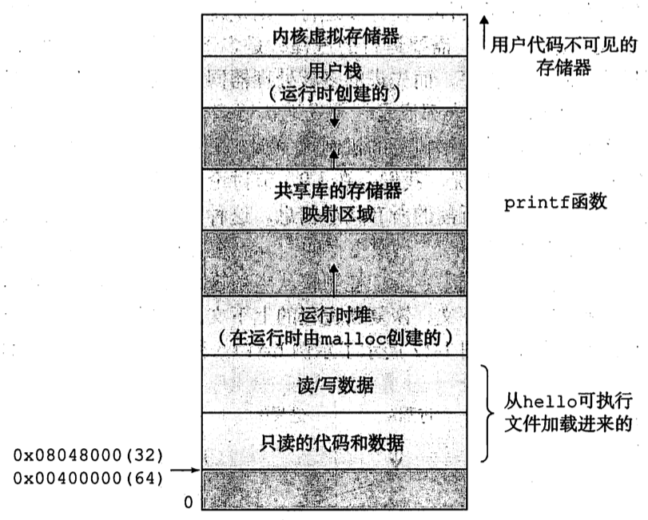

计算机系统漫游
为什么
- 硬件与软件共同构成了计算机系统
- 万变不离其宗，只有学好了计算机原理方能写好程序
存储
主存、磁盘、寄存器、IO 设备
程序的一个主要开销在于，将数据在不同的存储和 I/O 设备之间搬移。
寄存器速度高于主存速度，而且差距会更加加大。在两者之前通过高速缓存来提供速度与容量的折中。缓存一般有 L1,L2 或 L3 三级。
存储器层次结构

操作系统
作用
- 防止失控的程序对硬件的滥用
- 提供高层次的硬件功能抽象
部件
- 虚拟存储器
- 进程
- 文件
进程
进程是操作系统正在运行的程序的一个抽象。
多个进程被 CPU 调度执行，涉及操作系统之间的上下文切换。进程的上下文切换需要通过操作系统保存进程的状态，如 PC、寄存器的值、内存
线程
进程中可以有多个线程。线程之间共享代码和全局数据，更方便进行共享数据，某些场景下比进程更加高效
虚拟存储器
为进程提供一个干净的工作环境，使进程看到的是独立完整的主存空间

TODO 共享库映射区域为什么夹在堆和栈之间？
并发与并行
计算机的发展有两个目标：更多和更快。并发 (concurrency) 目的是更多，并行 (parallelism) 是更快。 但实践中两者普遍同时存在不同的层次中。
线程级并发
在单处理器硬件上，通过进行上下文切换模拟出多个线程同时进行的“假象”。不仅有利于对交互性的支持，同时有利于对于 I/O 密集性操作的性能优化。
在出现多核和超线程系统后，利用硬件提供的并行能力，真正提供了更好的并行性能
指令级并发
基本原理上一个指令需要多个时钟周期来完成。
通过流水线技术，可以优化到多个时钟周期内执行多个指令。
而超标量技术甚至可以使用一个时钟周期内执行多个指令。
单指令，多数据并行
SIMD 技术，常用于多媒体的处理。GCC 编译中提供特殊的向量数据进行此类数据优化处理。
抽象
API 对细节的抽象
指令集对处理器的抽象
文件对 I/O 的抽象
虚拟存储对程序存储的抽象
进程对程序执行的抽象
虚拟机对整个计算机的抽象
第一部分 程序结构和执行
TODO 信息的表示和处理
TODO 程序的机器级表示
处理器体系结构
- ISA，指处理器指令和指令处理的数据集
- 作为在编译器与处理器之间中间层
- 编译器只需要知道哪些指令可用
- 处理器建造出执行这些指令的处理器